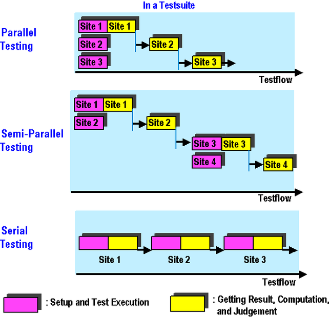
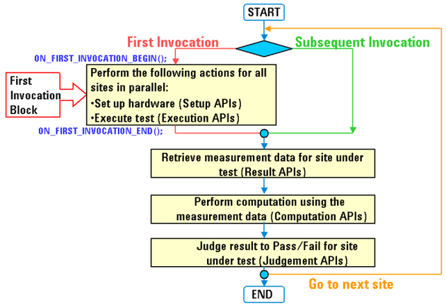

MS Test Method Programming Overview
As in a normal setup, test methods can also be used for executing test suites in a multisite setup.
Multisite test suites can be executed the following ways depending on how you set the test suite / test flow flags:
- Parallel
- Semi-parallel
- Serially
This is illustrated in the figure below.

This is explained in the sections Processing of Test Flow Blocks in a Multisite Setup and Setting Flags for Parallel Execution.
The following diagram shows the program flow of the test method program optimized for parallel execution, and describes the behavior briefly.

When the test method program is executed for the first time, the first invocation block of the Test Method API runs. This block performs the following:
- Sets up the hardware for all sites
- Performs the tests in parallel for all sites together
- Stores the measurement data of all sites in a cache
In addition, the first run of the Test method API continues beyond the end of the first invocation block and retrieves the data from the cache for the first site.
The next time the API is run (second invocation), it jumps over the section between ON_FIRST_INVOCATION_BEGIN(); and ON_FIRST_INVOCATION_END;() and only retrieves the stored measurement data from the cache for site 2 (without needing to set up its hardware or test it).
The program then uses this value to calculate, and judge the final result for this site as pass/fail.
With each further invocation, the measurement information from each of the other active sites is successively retrieved from the cache and evaluated.
For details of the Result API's behavior in multisite testing, see also Measurement Data Management.
To implement a strategy like this you must access site information from within the test method program, for example:
- How many sites are there?
- Is this the first execution of the test method program in this test flow?
- What is the site for which results have to be returned?
This can be achieved using the APIs for multisite testing.
For parallel execution of setup and test (measurement) for all sites at the first execution of the program, you must organize your code to be enclosed between the following two APIs:
- ON_FIRST_INVOCATION_BEGIN()
- ON_FIRST_INVOCATION_END()
These APIs enable parallel execution of all sites simultaneously. Therefore, you cannot access individual site information here. This is most important for multisite programming of the test method.
To set up different data for each site see Controlling the Setup/Query-Focus Automatically.
Note that you can define multiple first-invocation blocks in a test method program. For example, if you need two DC tests in a test method-based test suite. This is explained at the end of the section Parallel Execution.
The section Parallel Execution also gives examples of how to set up appropriate test method codes.
Other APIs for the multisite testing enable the following:
- Site-Specific Setup (Setup for each site independently)
- Controlling setup/query-focus states of each site automatically
- Controlling Setup-focus state of each site manually
For details on site-specific setup, see Site-Specific Setup.
- Getting the Site Numbers
- Currently-tested site number
- Configured site numbers
For details on getting the site numbers, see Getting the Site Numbers.
- Accessing Site-Specific Flags and User Variables
For details on accessing site-specific flags and user variables, see Accessing Site-Specific Flags and User Variables.
Note The APIs to be added for multisite testing are ignored in single-site testing. Consequently, you can develop test method programs that are compatible with both single-site and multisite tests. The APIs for the multisite testing make it possible to upgrade from single-site testing to multisite testing if the need arises.
This chapter shows many test method APIs but does not describe the syntax in detail. For more information on writing and setting up test method APIs see the manual, Test Method Reference.
Functional changes
- Introduced before SmarTest 6.3.2